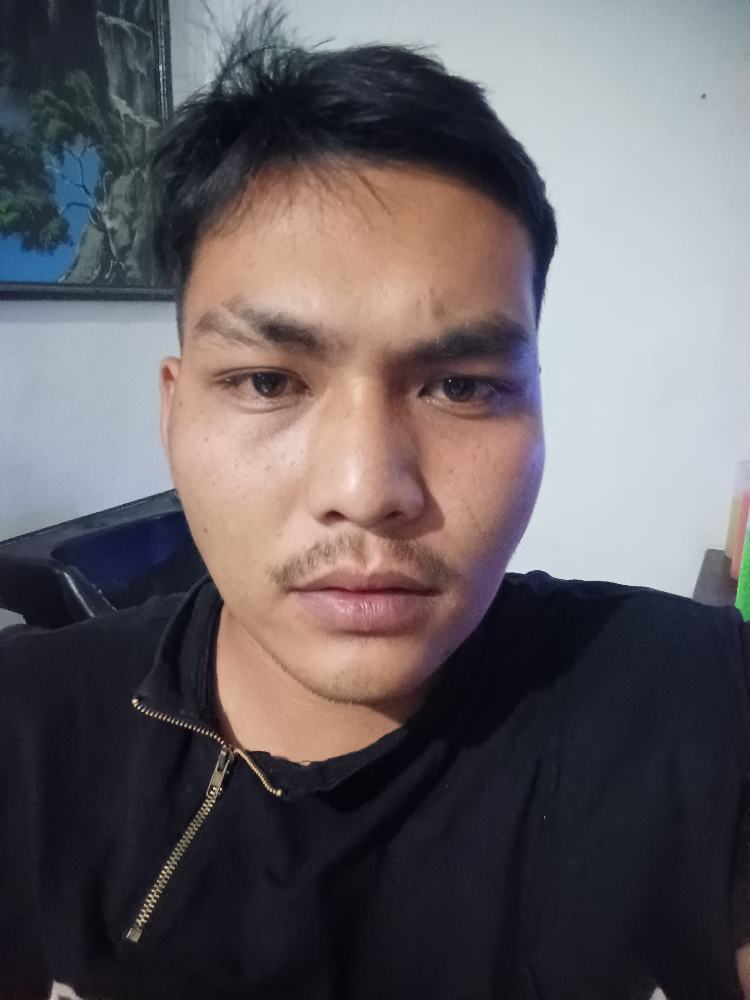

|
 |
Niko Amos SimanjuntakSarjana Informatika
Email: niko.juntak@delcom.org Saya adalah orang yang suka belajar, memiliki rasa empati yang tinggi dan menjunjung tinggi tanggung jawab. |
Pendidikan
Sarjana Informatika |
IPK: 3.35/4.00
Pengalaman
Devisi Pendidikan | Organisasi
Web Developer | Volunteer
Web Developer | Kerja Praktik
Dasar Pemrograman | Asisten Asisten Dosen di Institut Teknologi Del (2022 - Sekarang) |
KeahlianProgramming
Framework
Tools
|
Sertifikat
Dicoding
- Menjadi Back-End Developer Expert dengan JavaScript (November 2023)
- Menjadi Android Developer Expert (Desember 2023)
- Menjadi React Web Developer Expert (Desember 2025)
Portfolio
Github | @auxtern
- Forum API | JavaScript | HapiJS
- Github Expose | Kotlin | Android
- Kas Tracking | PHP | Laravel
- Sorun | .Net | Visual Studio
- Delcom Local Server | C# | Unity
- Zodiac Pedia | Dart | Flutter
- Tourist Map | Kotlin | Android
Itch.io | @auprojects
- Catlien | C# | Unity (2D)
- Breaking Loneliness | C# | Unity (3D)
- Escape from Ignorance | C# | Unity (3D)
Others
- Delcom Public API | PHP | Laravel (public-api.delcom.org)
- Delcom Tasks | Kotlin | Android (playstore)